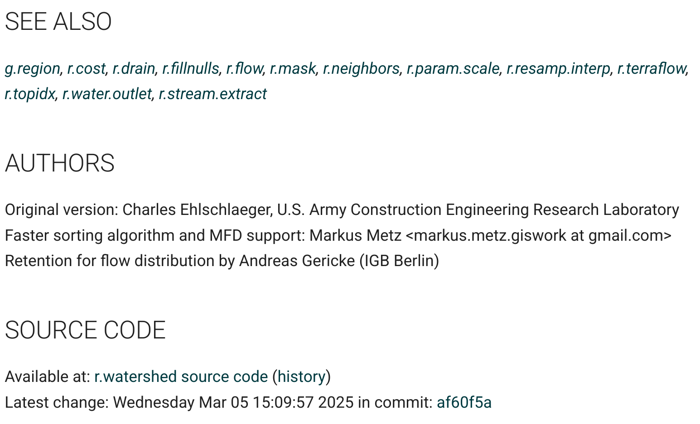
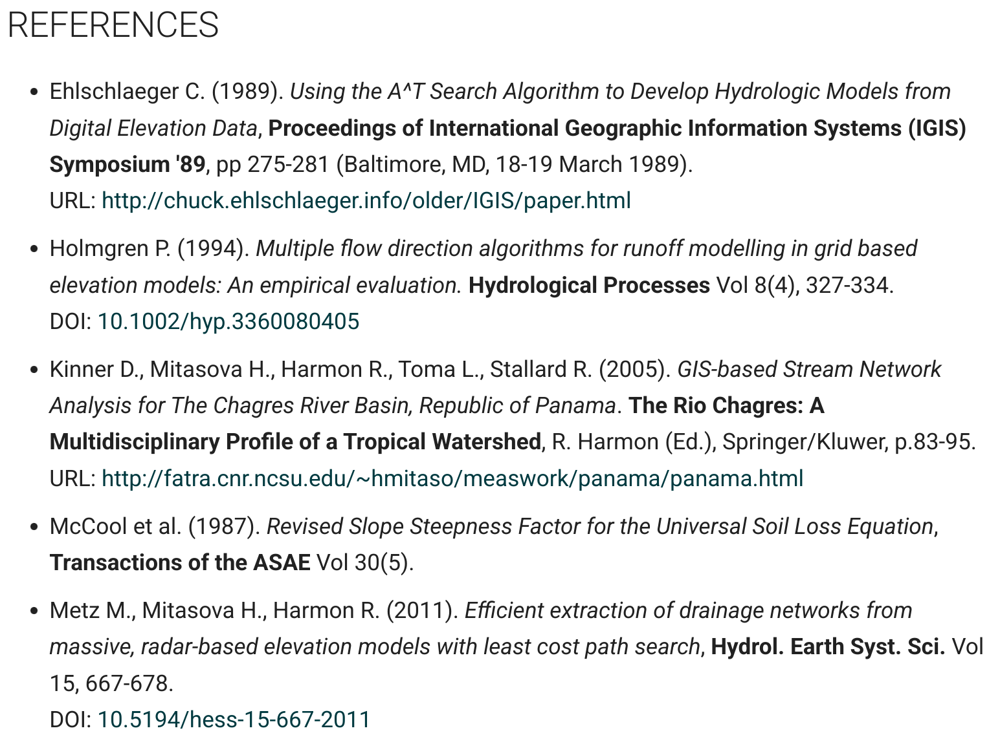
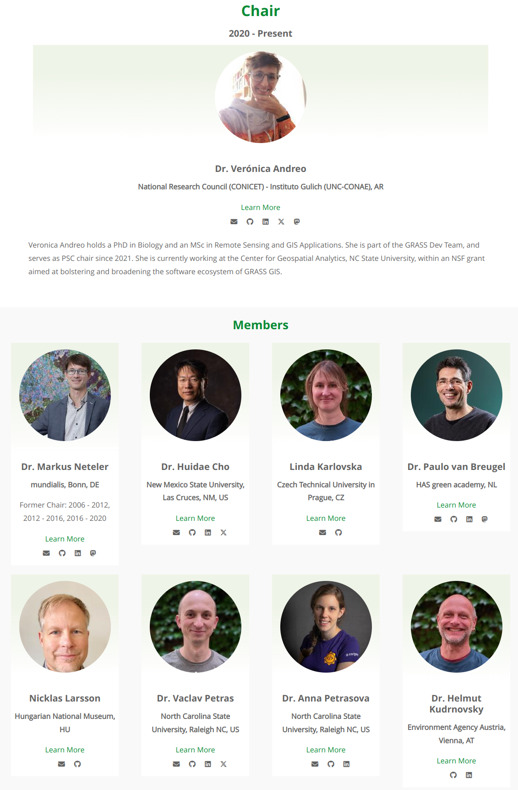
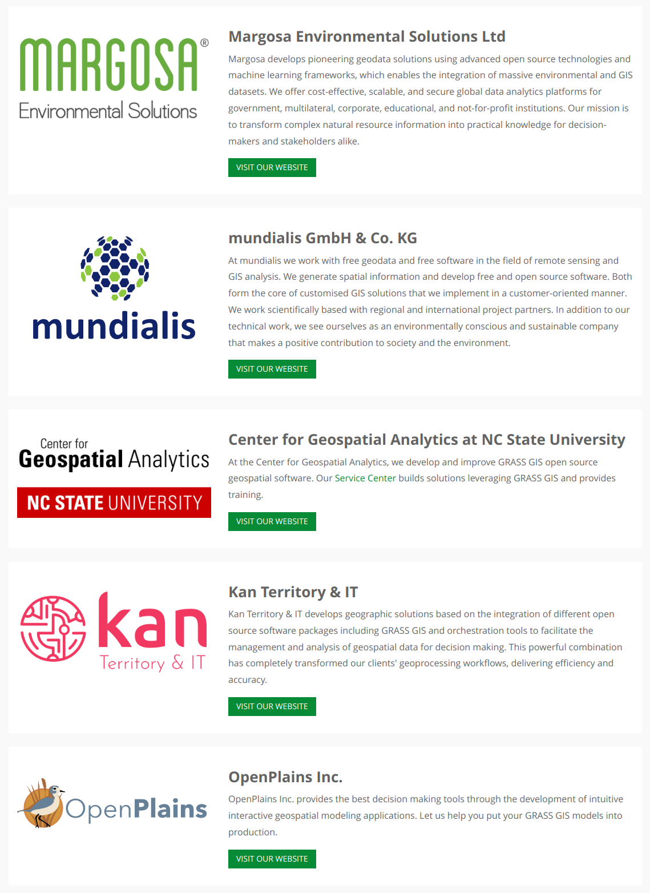

Curation, Dissemination, and Reusability of Research Code in GRASS
Vaclav (Vashek) Petras, Anna Petrasova
NCSU GeoForAll Lab
at the
Center for Geospatial Analytics
NC State University

IALE-North America 2025 in Raleigh, NC, April 13-17, 2025
Vaclav (Vashek) Petras
- Sr. Research Software Engineer at NC State's Center for Geospatial Analytics
- GRASS: Core Development Team, Project Steering Committee
- OSGeo: Charter Member, GRASS is an OSGeo Project

Community
Thanks to all those involved!

GRASS
- geospatial processing engine
- 400+ processing tools
- 400+ more tools in GRASS Addons

A Tool
Authors and Source Code
- Documentation links to the source code of each tool.

A Tool
- references to papers associated with modules
- references to related scientific papers

Curation
Initial Publishing
- Authors publish tools.
Long Term Curation
Addon Tools: Wind-water Interactions
r.windfetch – distance which winds blow without obstruction

by Anna Petrasova, funded by NSF Award #2322073, granted to Natrx, Inc.
Addon Tools: Digest Data with EODAG
download, import, preprocessing, cloud detection, and masking of remote sensing data with EODAG (Earth Observation Data Access Gateway)

by Hamed A. Elgizery, Veronica Andreo, Stefan Blumentrath
Tools: Temporal Algebra
D = if(start_date(A) < "2005-01-01", A + B)
Sum maps from A with maps with equal time stamps from B which are temporally before Jan 1, 2005

by Thomas Leppelt and Soeren Gebbert
Tools: Skyview
r.skyview – non-directional alternative to shaded relief
by Anna Petrasova
Tools: SLIC
i.superpixels.slic - image segmentation using SLIC superpixels
by Rashad Kanavath and Markus Metz
Tools: Fast Hydrology Algorithms
r.accumulate – fast weighted flow accumulation, watersheds, stream networks, and longest flow paths using a flow direction
by Huidae Cho
Tools: Vector Topology Cleaning
v.clean – automated topology with outputs for additional checks

by Markus Metz, Radim Blazek, and others
Tools: More Machine Learning
Supervised classification with Support Vector Machines
- i.svm.train: Train a Support Vector Machine
- i.svm.predict: Predict with a Support Vector Machine
 by Maris Nartiss (Nartiss & Melniks 2023)
by Maris Nartiss (Nartiss & Melniks 2023)
Tools: More Topology Handling
v.fill.holes: Fill holes in areas by keeping only outer boundaries
 by Vaclav Petras
by Vaclav Petras
Tools: Better Horizon Identification
r.horizon: Output for multiple points, distances, and many other improvements
 by Anna Petrasova, funded by NSF Award #2322073, granted to Natrx, Inc.
by Anna Petrasova, funded by NSF Award #2322073, granted to Natrx, Inc.
Tools: Urban Modeling
r.futures - set of tools for urban growth modeling

by NC State Center for Geospatial Analytics
Dissemination
Python
Python API comes with GRASS.
R
rgrass package to use GRASS from R is on CRAN.
Command Line
- Interactive shell
- One-time execution or batch usage with
--exec

Desktop GIS

QGIS
GRASS tools are available through the Processing Plugin(GUI and Python).

actinia
New Tutorials Site
Just launched: grass-tutorials.osgeo.org

lead by the NC State Center for Geospatial Analytics
New Documentation

lead by the NC State Center for Geospatial Analytics
Project Steering Committee Elections
- Elections: October 2024, Positions Filled: 4
- Total Members: 9, Term Length: 6 years

NSF Grant Lead by NC State
-
NSF grant awarded to NC State, ASU, NMSU, Yale
- To enhance infrastructure
- To revise contributing guidelines
- To support community building
- The NSF program is not funding new features, bug fixes, or ongoing maintenance

Commercial Support

Reusability
Tool Naming
Functionality is divided into modules (over 500)
| Prefix | Functionality | Example |
|---|---|---|
| r. | raster processing | r.mapcalc: raster map algebra |
| v. | vector processing | v.surf.rst: interpolation from points |
| g. | general management | g.remove: removes maps |
| d. | display and rendering | d.rast: display raster map |

Interfaces: JSON for Text Outputs
JSON output format support(format="json") in multiple tools (v.db.select, t.rast.list, …)
v.db.select roadsmajor format=json
With better integration in Python:
import json
import grass.script as gs
data = gs.parse_command("v.db.select", map="roadsmajor", format="json")
for row in data["records"]:
print(row["ROAD_NAME"])
More coming in 8.5 (r.report, r.info, …)
by Anna Petrasova, Vaclav Petras, Huidae Cho, Kriti Birda, Corey White, and othersLocations are now Projects
The Python API, command line, and GUI are now using project instead of location for the main component of the data hierarchy.

-
.../data/missouri(location → project)interstate_44(mapset aka sub-project)
Projects
-
Projects keep the data consistent.
- Same format for all data.
- Same CRS for all data.
- Separates data preprocessing from analysis.
-
Mapsets keep the data organized.
- One default mapset or multiple mapsets.
- Work is happening in one mapset, but data from any mapset can be used.
import grass.script as gs
gs.create_project("/path/to/project", epsg="3358")
-
.../data/missouri(project)interstate_44(mapset)- ...
Python API: Simpler Creation of Projects
grass.script Python package:
Greatly simplified the creation of new projects in Python without a running session (no more chicken and egg problems)
import grass.script as gs
gs.create_project("cordoba_utm21s", epsg="32721")
gs.setup.init("cordoba_utm21s")
Duality between GUI and commands

 Python:
Python:

Examples in the documentation and class instructions are usually provided as commands which can be used to fill in the GUI, write Python code, or run them directly.
Carrier Investment
- Invest your time into technologies which stay and don't disapear in couple years.
- Bash scripting, Python, GRASS
- Longetivity, open-source, platfrom-idependent
- Things develop, versions update, features are added...
- ...but general ideas stay the same.
Code from 2002 running in 2019?
version 5.0 code works as is in 7.6:r.mapcalc depr.bin="if((elev - fill)< 0., 1, 0)"
although there is a better way to write it:
r.mapcalc "depr_bin = if((elev - fill) < 0., 1, 0)"

Open-Source Licensing
-
Organizations:
- Provider-independent, contractor-independent.
- Financial investments go to a public pool.
- Pay for support and features, not usage.
- No per-CPU license fees.
-
Individuals:
- Work computer or personal laptop.
- Employer-independent.
Next Steps
Mentoring and Student Grants Program
- Mentoring to integrate GRASS into your workflows (registration closes in May)
- Student grants to contribute to GRASS (call open for 2025)

GRASS Developer Summit 2025
- Raleigh, NC
- May 19-24
- Register and become an insider: tinyurl.com/grass-2025
- Stay tuned for a user-focused event on Thursday, May 22

lead by the NC State Center for Geospatial Analytics
vpetras@ncsu.edu, LinkedIn: Vaclav Petras, @wenzeslaus
wenzeslaus.github.io/grass-talks
This talk was funded by the US National Science Foundation (NSF), award 2303651.